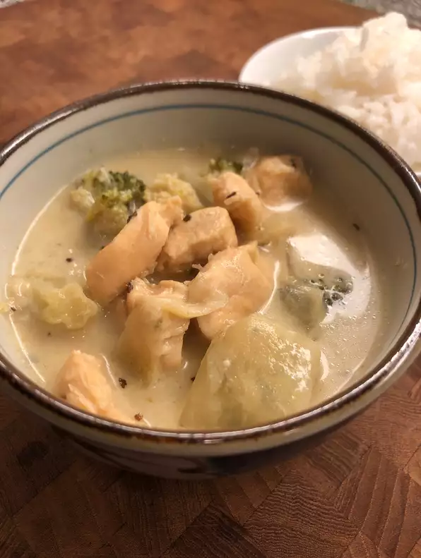

Thai Green Curry

Description
A spicy authentic green curry. A delectable representative of Thai cuisine.
Ingredients
- 2 cups water
- 1 cup uncooked jasmine rice
- 1 tbsp olive oil
- 1 onion, cut into wedges
- 2 tbsp fish sauce
- 1 tbsp brown sugar
- 1 tsp ground ginger
- 1 tsp minced garlic
- 1 lb chicken tenders, cut into bite-sized pieces
- 1 tbsp green curry paste, or more to taste
- 1 tbsp chopped fresh basil
- 1 eggplant, cut into 1-in cubes
- 22 oz chicken broth, or more to taste
- 15 oz can light coconut milk
- 8 oz can bamboo shoots
- 2 tsp lime juice
- 1 small bunch fresh basil leaves, or to taste
Steps
- Bring water and rice to a boil in a saucepan. Reduce heat to medium-low, cover,
and simmer until rice is tender and water has been absorbed, 20 to 25 minutes.
- Meanwhile, heat oil in a large saucepan over medium heat. Mix in onion, fish
sauce, brown sugar, ginger, and garlic; cook and stir about 5 minutes. Add
chicken, curry paste, and basil. Cook, stirring occasionally, about 5 minutes
more. Add eggplant, cover, and reduce heat to low to avoid burning spices.
Cook about 5 minutes more.
- Pour broth, coconut milk, and bamboo shoots into the saucepan. Continue
cooking until eggplant is tender and curry is heated through, 5 to 10
minutes more. Stir in lime juice before serving over cooked rice with basil
leaves.